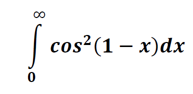
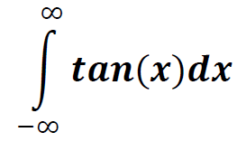
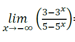
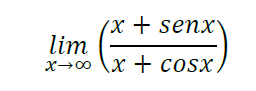
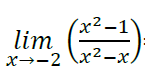
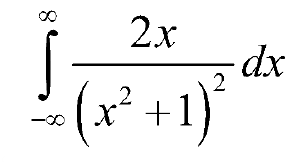

a.Converge π/5
b.Converge π
c.Diverge
d.Converge 32π
6.-Determina si la siguiente integral es convergente o divergente y encuentre su valor

a.Converge 1/5
b.Converge 5/2
c.Converge 0
d.Diverge
7.-Realice el siguiente limite usando L'Hopital.

a. 5/2
b. 2/3
c. 3/5
d. 1
8.-Realice el siguiente limite usando L'Hopital.

a. 1
b. 4
c. 1/3
d. 0
9.-Realice el siguiente limite usando L'Hopital.

a. 3/2
b. ln(1+√5)
c. 1/2
d. ln(1)
10.-Determina si la siguiente integral es convergente o divergente y encuentre su valor

a.Diverge
b.Converge 3/5√5
c.Converge √18
d.Converge √8/16
Regresar.
Asegurate de contestar todas las preguntas.